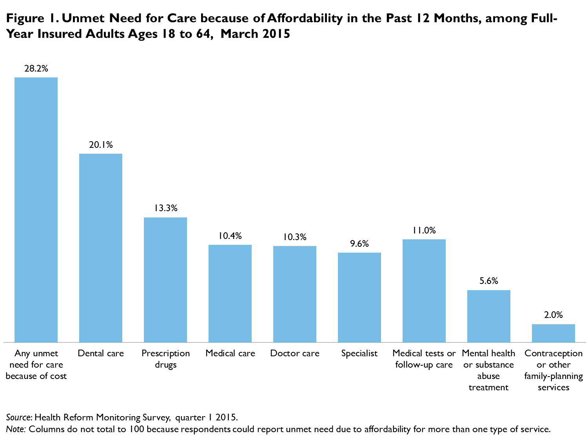

QuickTake: The Forgotten Health Care Need: Gaps in Dental Care for Insured Adults Remain under ACA
Adele Shartzer and Genevieve M. KenneySeptember 24, 2015
Oral health is an important component of overall health. Untreated oral health issues can lead to pain, tooth loss, unemployment, and other chronic health conditions (Institute of Medicine and National Research Council 2011). Access to regular, affordable dental care is important for maintaining good oral health, but gaps in dental care access have long existed. Though problems were particularly prevalent for uninsured adults, adults with full-year health insurance coverage also reported unmet need for dental care (Kaiser Commission on Medicaid and the Uninsured 2012; Long et al. 2012). The Affordable Care Act (ACA) expanded access to insurance coverage for millions of adults and improved coverage for preventive services, but financial barriers to dental services were largely unchanged. Medicaid’s “benchmark benefits” for individuals newly eligible under the ACA include oral health coverage for children but not for adults, and the list of essential health benefits that must be covered by qualified private health plans does not include dental benefits. In employer-based insurance, many employers offer dental coverage through a separate insurance plan, but a smaller share of workers have access to dental coverage through work than have access to health coverage through work; 45 percent of workers in private industry were offered dental benefits in 2012 compared with 70 percent who were offered health benefits (Wiatrowski 2013). In addition, a limited supply of dentists, particularly in underserved or rural areas, can make obtaining routine oral health care difficult even for those with good dental coverage (Allison and Manski 2007).
The Urban Institute’s Health Reform Monitoring Survey (HRMS) has been tracking health care access and affordability since the first quarter of 2013. This QuickTake reports on unmet need for dental care because of affordability in the past 12 months, focusing on nonelderly adults (ages 18 to 64) who have had insurance coverage for all of the past 12 months (to whom we refer as “full-year insured”). We assess unmet need for dental care by family income, race or ethnicity, gender, and health insurance type (including employer-sponsored insurance [ESI] and adults insured with other types of coverage [collectively called “non-ESI coverage”]). We use data from the March 2015 HRMS, just over one year after implementation of the ACA’s major insurance coverage provisions.
In March 2015, dental care was the most common service for which full-year insured adults reported unmet needs because of affordability (figure 1), consistent with pre-ACA patterns. Across the different types of services examined in the survey, 20.1 percent of full-year insured adults reported an unmet need for dental care because of affordability, highlighting the challenge of affording dental care even for those with health insurance coverage. Among full-year insured adults with any unmet need for care because of affordability, 71.4 percent said that they had had an unmet need for dental care; 28.9 percent of adults with any unmet need reported dental care as the sole area of unmet need, and 42.5 percent reported and unmet need for dental care and some other type of health care (data not shown).  Obtaining affordable dental care was particularly challenging for low-income adults with full-year insurance coverage: Of those, 30.8 percent reported unmet need for dental care because of affordability (figure 2). But dental care affordability issues were common among insured adults with higher incomes as well: Fully 23.8 percent of adults with family income between 139 and 399 percent of the federal poverty level (FPL) and 11.4 percent of adults with family income at or above 400 percent of FPL reported unmet need for dental care because of affordability. Full-year insured Hispanic adults were more likely than adults of other racial and ethnic groups to report unmet need for dental care because of affordability, and women were more likely than men to have unmet dental needs. We also find that adults insured with coverage other than ESI were more likely to report unmet need for dental care, including 23.0 percent of adults with private, nongroup coverage and 34.9 percent of adults insured with public coverage (data not shown). This could reflect the greater availability of supplemental dental coverage for those with ESI than for adults with Medicaid or nongroup coverage.
For low-income insured adults, there was no difference in unmet need for dental care because of affordability between those with ESI and those insured with other coverage (figure 3). For insured adults with family income between 139 and 399 percent of FPL, however, adults with non-ESI coverage were significantly more likely than those with ESI to report unmet dental needs because of affordability (32.6 versus 21.2 percent, respectively). Though the level of unmet dental needs generally was lower among insured adults with family income 400 percent of FPL or higher, adults with non-ESI coverage in this income category were also more likely to report unmet dental needs because of affordability.
Though the ACA has led to increased health insurance coverage for millions of nonelderly adults, and early signs indicate improvements in broad measures of access to care and affordability (Long et al. 2015; Sommers et al. 2015), we find that gaps in access to dental care remain even for insured adults and that low- and moderate-income adults in particular face challenges affording dental care.
References
Allison, R. Andrew, and Richard J. Manski. 2007. “The Supply of Dentists and Access to Care in Rural Kansas.” Journal of Rural Health 23 (3): 198—206.
Kaiser Commission on Medicaid and the Uninsured. 2012. Oral Health and Low-Income Nonelderly Adults: A Review of Coverage and Access. Washington, DC: Kaiser Family Foundation.
Long, Sharon K., Karen Stockley, Elaine Grimm, and Christine Coyer. 2012. National Findings on Access to Health Care and Service Use for Non-elderly Adults Enrolled in Medicaid. Washington, DC: MACPAC.
Long, Sharon K., Michael Karpman, Genevieve M. Kenney, Stephen Zuckerman, Douglas Wissoker, Adele Shartzer, Nathaniel Anderson, and Katherine Hempstead. 2015. Taking Stock: Gains in Health Insurance Coverage under the ACA as of March 2015. Washington, DC: Urban Institute.
Institute of Medicine and National Research Council. 2011. Improving Access to Oral Health Care for Vulnerable and Underserved Populations. Washington, DC: National Academies Press.
Sommers, Benjamin D., Munira Gunja, Kenneth Finegold, and Thomas Musco. 2015. “Changes in Self-reported Insurance Coverage, Access to Care, and Health under the Affordable Care Act.” Journal of the American Medical Association 214 (4): 366—74.
Wiatrowski, William J. 2013. “Employment-Based Health Benefits in Small and Large Private Establishments.” Beyond the Numbers 2 (8). Washington, DC: Bureau of Labor Statistics.
About the Series
For more information on the HRMS and for other QuickTakes in this series, visit www.urban.org/hrms.
|

 |
 |
 |